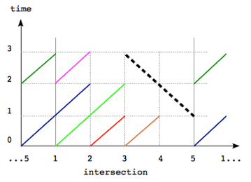
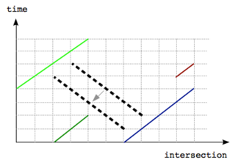
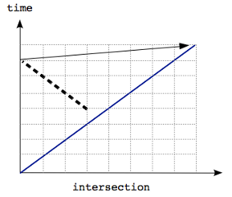
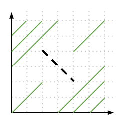

In this problem we are interested in finding the maximum time we can drive against the direction in a traffic circle. For small test cases, the size of the input is small enough to try all possible intersections, time to start, and check the length to drive without touching any other car.
For large test cases, the above approach is not good enough due to the extremely large N and X (up to 1010). Therefore in order to solve the large test cases, we transform the problem into the 2-dimensional plane with intersection and time as axes. Then, each car can be represented as line segments; your car will be represented as a line segment orthogonal to other line segments formed by other cars. Figure 1 shows the second sample test case. Lined segments corresponding to different cars are denoted with different colors while the black dotted segment corresponds to your car. Note that as the intersections are in a traffic circle, we show it by repeating intersection 5 and 1 on the two ends in Figure 1.

Figure 1
So the problem can be reformulated as follows: given a set of line segments, find the maximum possible length of a perpendicular segment which does not touch any other segment. Note that if two segments have a point in common the corresponding cars touch each other.
To solve the large test case one needs to notice that a line segment of maximum possible length can be chosen so that it goes near one of the endpoints of another segment. By “near” we mean distance = 1 in one of the axes. Indeed, if we have a segment of maximum possible length, that does not go near one of the endpoints, we can always move it so that it does, see Figure 2 for an example.

Figure 2

Figure 3
The statement is also true in examples such as in Figure 3 because intersections are arranged in a circular manner and the solution segment is near the top right endpoint which is shown with an arrow.

Figure 4
Thus we note that changes in the length of segments happen near these endpoints. Therefore to solve the problem we need to go over all endpoints of car segments and consider its neighbourhood (-1 and +1 in both of the axes). Note that we also need to consider segments that go through endpoints +/-(1,1), an example is shown in Figure 4. Then we can compute all segments that pass through these near points and pick the longest segment as the answer.
For each such candidate point, we need to check how far up and down a segment that go through the candidate point can reach without touching other segments. This can be done simply by going over all car segments and checking if and where our candidate segment intersect them. The complexity of this algorithm is O(C2), which is enough to solve the large case.